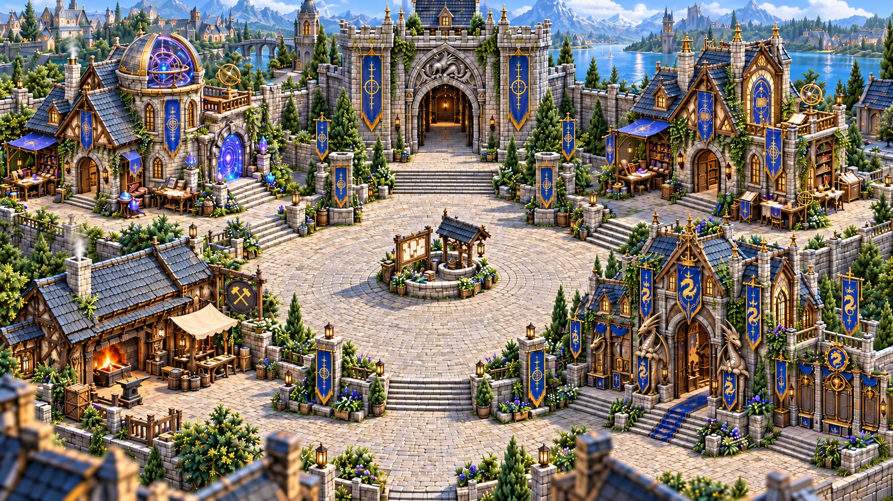

Town relighting · original artwork GPU proof
Prototype — NOT approved relightable Town artwork. This isolated G1/G3 renderer uses the exact approved daylight painting as a temporary reference texture, plus existing hand-traced foreground cutouts as shadow casters. The painting still contains baked light/shadows: it must be replaced with independently authored neutral material layers before T2 visual sign-off. This is neither the live Town nor the final day/night lighting. The movable diagnostic NPC reproduces the current live Town CSS placeholder, not finished NPC pixel artwork.
Initializing GPU projection…
Immutable approved reference (day painting, below). Compare composition and landmark alignment only.
